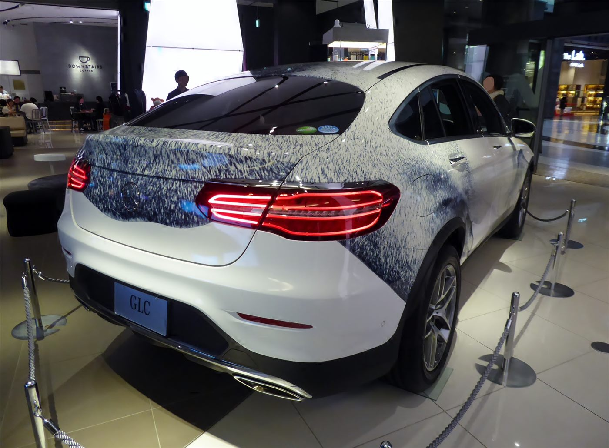

신형 메르세데스-벤츠 GLB, 대만서 예약판매 돌입… ‘일자형 후미등’ 폐지
새로운 세대의 메르세데스-벤츠 GLB가 대만에서 예약판매에 들어갔다. 전 세계적으로 관통형 일자 후미등이 사라진 점이 눈길을 끈다.
형덕창 기자 · 2026.07.20
橋경제·문화·스포츠

대만 연합보는 신세대 벤츠 GLB가 약 198만 대만달러부터 예약판매를 시작했으며, 최근 유행하던 관통형 후미등이 이번 모델에서는 채택되지 않았다고 전했다. 디자인 방향의 변화가 주목받고 있다.
광고 문의 · 300×250관통형 후미등은 최근 여러 브랜드가 채택해 온 디자인 요소다. 이를 폐지한 것은 브랜드 정체성과 디자인 철학을 다시 정리하려는 시도로 해석된다.
자동차 디자인은 브랜드의 이미지와 소비자 선호에 직접 영향을 미친다. 후미등과 전면부 같은 요소는 차량의 인상을 좌우하는 핵심으로 꼽힌다.
예약판매 단계의 가격과 사양은 최종 판매 조건에 따라 달라질 수 있다. 소비자는 실제 출시 시점의 구성과 가격을 함께 확인할 필요가 있다.
華橋時報는 특정 제품의 구매를 권하지 않으며, 산업 동향의 하나로 소식을 전한다. 디자인과 기술의 변화가 소비자의 선택지를 넓히는 방향으로 이어지기를 기대한다.
출처·참고 (사실 확인용 — 본문은 직접 재작성)
· 연합보
· 연합보